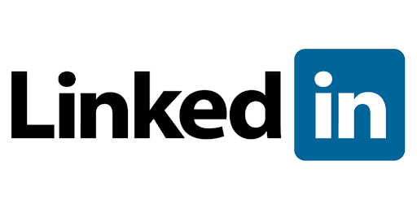

Linktin (engl. LinkedIn) poslovna je društvena mreža koja je namenjena povezivanju poslodavaca i ljudi koji traže posao. Ova mreža je nastala sa ciljem efikasnog predstavljanja profesionalnih sposobnosti njenih članova, povezivanja i što bržeg spajanja poslodavaca sa lovcima na poslove[2]. LinkedIn je, pored ostalog, najveća svetska profesionalna poslovna društvena mreža na kojoj poslovni ljudi razmenjuju iskustva, učestvuju u raspravama, dele zanimljive sadržaje i, naravno, pronalaze nove poslodavce[3]. Ova društvena mreža je osnovana u decembru 2002. godine, a pokrenuta je 5. maja 2003. godine. U aprilu 2014. godine LinkedIn je objavio da je na ovoj društvenoj mreži više od 300 miliona registrovanih korisnika iz više od 200 zemalja širom sveta, od čega je 100 miliona registrovanih korisnika iz SAD[4].
Istorija
Generalni direktor LinkedIn-a je Džef Vajner (Jeff Weiner)[7], prethodno je bio izvršni direktor kompanije Yahoo! Inc. Kompanija je osnovana od strane Rida Hofmana (Reid Hoffman) i osnivačkih članova tima iz PayPal-a i Socialnet.com (Allen Blue, Eric Ly, Jean-Luc Vaillant, Lee Hower, Konstantin Guericke, Stephen Beitzel, David Eves, Ian McNish, Yan Pujante, i Chris Saccheri). Osnivač Rid Hofman, ranije direktor LinkedIn-a, sada je predsednik Upravnog odbora[8]. LinkedIn je kompanija sa sedištem u Mauntin Vjuu (Mountain View), u Kaliforniji, sa kancelarijama u Omahi, Čikagu, Njujorku, Londonu i Dablinu. LinkedIn je dostigao profitabilnost u martu 2006. godine[9]. Tokom januara 2011. godine, kompanija je zaradila ukupno 103 miliona dolara od investicija[10].